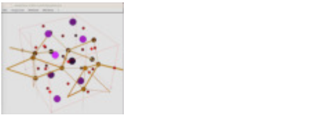

Next: Programs for Manipulation of Up: USERS MANUAL Workshops available Previous: Crystal Field Example: Fitting Contents Index
This section contains some further programs which do some important manipulations in magnetism, ...
usage: anisotropy -h
anisotropy T H xn yn zn nofsteps [-r sipffilename Hxc1 Hxc2 ... Hxcnofcomponents]
anisotropy T H -p nofthetasteps [-r sipffilename Hxc1 Hxc2 ... Hxcnofcomponents]
-h : this (help) message
T : temperature in Kelvin
H : absolute value of the external magnetic field (T)
xn,yn,zn : direction normal to plane, in which the anisotropy
should be calculated ... e.g. if you want to
calculate the anisotropy in the xy plane, then
enter xn yn zn = 0 0 1
nofsteps : number of steps to be calculated
-p : calculate polycrystal average
nofthetastepssteps : number of theta steps to be calculated for polycrystal average
option:
-r sipffilename: filename of single ion parameter file
Hxc1,Hxc2,... are the exchange field components (meV)
(exchange field is kept constant, external magnetic
field is rotated in the anisotropy calculation)
output files:
./results/anisotropy.out contains anisotropy information
; Please replace text in square brackets [] with your data _cell_length_a [a_in_Angstrom] _cell_length_b [b_in_Angstrom] _cell_length_c [b_in_Angstrom] _cell_angle_alpha [alpha_in_degrees] _cell_angle_beta [beta_in_degrees] _cell_angle_gamma [gamma_in_degrees] ; The H-M symbol generally needed by cif2mcphas but some spacegroups ; which have only one setting can be identified purely by the number. ; Most orthorhombic or low symmetry spacegroups have multiple centring, ; origin choices or unique axes which will require an H-M symbol. ; If this is the case, and you give just the spacegroup number, ; cif2mcphas may return with an error. ; If you don't use one of these fields, you must comment it out, by ; putting a ";" or "#" at the start of the line. _symmetry_space_group_name_H-M [Hermann-Maguin_symbol_with_spaces] _symmetry_Int_Tables_number [SpacegroupNumber] ; At the end of the file, please list the non-equivalent ; sites' fractional coordinates of this structure. loop_ _atom_site_label _atom_site_fract_x _atom_site_fract_y _atom_site_fract_z [AtomSite] [x_coord] [y_coord] [z_coord]
replacing instances of e.g. [AtomSite] or [x_coord] with the site name and fraction  -coordinate, etc.
This template can also be generated using the command "cif2mcphas -c" or "cif2mcphas –create".
See also: icsdread which downloads and creates a CIF from an entry of the (free) Korean ICSD mirror.
-coordinate, etc.
This template can also be generated using the command "cif2mcphas -c" or "cif2mcphas –create".
See also: icsdread which downloads and creates a CIF from an entry of the (free) Korean ICSD mirror.
For example, this template may be filled with the following information
_cell_length_a 3.4891(4) _cell_length_b 4.4898(6) _cell_length_c 6.0033(8) _cell_angle_alpha 90 _cell_angle_beta 90 _cell_angle_gamma 90 _space_group_crystal_system 'orthorhombic' _symmetry_Int_Tables_number 38 _symmetry_space_group_name_H-M 'A m m 2' loop_ _atom_site_label _atom_site_type_symbol _atom_site_fract_x _atom_site_fract_y _atom_site_fract_z Tm1 Tm 0.5000 0.0000 0.3850(2) Ni1 Ni 0.0000 0.0000 -0.0034(3) C1 C 0.0000 0.349(2) 0.1851(18) ; C-C bond charge as 0 0.5 z as C1 E1 E 0.0000 0.500(2) C1 ; atomic radii Tm 227 pm C 170pm Ni 163pm ; C-Ni bonds at Ni+(C1-Ni)*163/(163+170) E2 E Nix+(C1x-Ni)*163/(163+170) Ni+(C1-Niy)*163/(163+170) Ni+(C1-Ni)*163/(163+170)
Note that atomic coordinates may also be expressed as formulas, with positions from previous lines as variables. In the above example the bond charge of bonding electrons is denoted by the symbol E. The position coordinate is defined relative to the position of C1 and Ni. The indices x,y and z refer to the corresponding fractional coordinate and can be omitted if the coordinate to be computed is the same.
Options:
 .
.
Default is to create sipf files with so1ion module for f-electrons and ic1ion module for d-electrons and phonon module for nonmagnetic ions. The -so and -ic options have no effect unless either -pc or -rp is specified. -so takes precedent over -ic (e.g. when typing cif2mcphas -rp -so -ic file.cif the program will ignore the -ic and force all ions to use so1ion).
Some examples of the syntax are:
cif2mcphas -pc 3.5 ermno3.cif cif2mcphas -pc 3.5 -sp ermno3.cif cif2mcphas -rp ermno3.cif cif2mcphas -pc 3.5 -so ermno3.cif cif2mcphas -rp -ic ermno3.cif
 using the debye model
according to the following formula:
with
Range is from zero to Tmax in stepwidths dT
unless a datafile is given.
If a datafile is given, with data column d1 and d2,the strain
is calculated for T-values of data column d1 and epsilon
is compared to data in column d2 - a standard
deviation sta is calculated as a sum of squared deviations.
As output the datafile is given, an additional is column added
containing the calculated strain epsilon. The datafile has to
be sorted according to descending T values !!!
output is written to stdout.
using the debye model
according to the following formula:
with
Range is from zero to Tmax in stepwidths dT
unless a datafile is given.
If a datafile is given, with data column d1 and d2,the strain
is calculated for T-values of data column d1 and epsilon
is compared to data in column d2 - a standard
deviation sta is calculated as a sum of squared deviations.
As output the datafile is given, an additional is column added
containing the calculated strain epsilon. The datafile has to
be sorted according to descending T values !!!
output is written to stdout.
output: files can be found in directory results, filename.fit is created with fitted function and parameter values
 INPUT.CIF operator for futher use, for example to set up McPhase input files using cif2mcphas
INPUT.CIF operator for futher use, for example to set up McPhase input files using cif2mcphas
# atom_i_sipf atom_j_sipf bondlength(A) long(N/m) trans(N/m) Ce1.sipf Ce1.sipf +4.0 200.9 100.0 Ce1.sipf Ce1.sipf +4.7 70.9 0.0mind: into MODPAR2-6 in *.sipf the Einstein-oscillator parameters are written, too. Longitudinal/Transversal springs are described by
 /
/ , respectively and
the energy is given by
, respectively and
the energy is given by
 |
(161) |
and transversal
springs .
Omit filename to create a sample file with
longitudinal springs calculated according to
N/m.
Output: file makenn.Cel is created containing just the elastic constants.
 in order to not overlap with the original site.
For option [-r] the original site sipf file is replaced automatically
to use an sipf file with the MODULE=phonon similar to all the other
non magnetic sites (which should have a MODULE=phonon).
For the new magnetic site the program
pointc is used by makenn with option -d to calculate derivatives
which are inserted as interaction
parameters between MODULE=phonon and MODULE=so1ion sites.
In order to use the resulting file resultsmakenn.j a phonon
model has to be set up,
and the phonon model has to be added to makenn.j, e.g. by
program addj. Moreover, magnetic sites sipf files are required,
which are created in results/makenn.a*.sipf.
Note: A screening file can be used to define distance dependent
screening of charges for the pointcharge model calculation
format: col1 distance r (Å), col 2 screening factor
for , col 3 for and col 4 for
in order to not overlap with the original site.
For option [-r] the original site sipf file is replaced automatically
to use an sipf file with the MODULE=phonon similar to all the other
non magnetic sites (which should have a MODULE=phonon).
For the new magnetic site the program
pointc is used by makenn with option -d to calculate derivatives
which are inserted as interaction
parameters between MODULE=phonon and MODULE=so1ion sites.
In order to use the resulting file resultsmakenn.j a phonon
model has to be set up,
and the phonon model has to be added to makenn.j, e.g. by
program addj. Moreover, magnetic sites sipf files are required,
which are created in results/makenn.a*.sipf.
Note: A screening file can be used to define distance dependent
screening of charges for the pointcharge model calculation
format: col1 distance r (Å), col 2 screening factor
for , col 3 for and col 4 for
 and
and 
 |
|
(162) |
|
(163) |
The neigbours of each atom are also stored in seperate files results/makenn.a*.pc, which can be used with the program pointc to evaluate the pointcharge model and calculate crystal field paramaters.
 .
.
.
.
For an orthorhombic distorted Fermi sphere the volume is
and
it follows
. Here we have assumed that the strain will not change
the effective electron mass and band structure significantly and the change in will be
only due to the change in electron density which is correlated to a change density of electron states in k-space.
In this case
and
for
and similar for and  .
We calculate
.
We calculate
 and
and similar for
.
Thus for options
and
and similar for
.
Thus for options
 .
.
.
.
These derivatives are useful for the calculation of exchange striction effects.
Note:  refers to a right handed Euclidean coordinate system with
refers to a right handed Euclidean coordinate system with
 ,
,
 and perpendicular to
and perpendicular to  and
and  .
.
|

|
 sipffile charge_and_positionfile.pos:
sipffile charge_and_positionfile.pos: in distance
x=4 Åy=1 Åz=5.3 Åfrom a Ce
in distance
x=4 Åy=1 Åz=5.3 Åfrom a Ce ion. See equation (3) and
appendix E for formulas.
ion. See equation (3) and
appendix E for formulas.
 for ,
for ,  for .
... the first line of the single ion property file.sipf must be
for .
... the first line of the single ion property file.sipf must be
#!MODULE=so1ionThe single ion property file must then contain the following information (# denotes comments):
# file.sipf should contain the following information (# denotes comments): # the name of the ion IONTYPE=Ce3+ #Stevens parameters (optional, necessary for output of Blm) ALPHA=-0.0571429 BETA=0.00634921 GAMMA=0 # the radial matrix elements RN=<r^N> in units of a0^N (a0=0.5292 A) R2=1.309 R4=3.964 R6=23.31 #optional radial wave function parameters, for transition metal ions the the values #are tabulated in Clementi & Roetti Atomic data and nuclear data tables 14 #(1974) 177-478, the radial wave function is expanded as # R(r)=sum_p Cp r^(Np-1) exp(-XIp r)(2 XIp)^(Np+0.5)/sqrt(2Np!) #rare earth:Freeman&Watson PR127(1962)2058,Sovers J.Phys.Chem.Sol.28(1966)1073 #e.g. Co2+ is isoelectronic to Fe+, looking at page 422 #of Clemente & Roetti the parameters are N1=3 XI1=4.95296 C1=0.36301 N2=3 XI2=12.2963 C2=0.02707 N3=3 XI3=7.03565 C3=0.14777
OUTPUT:
 in Stevens Notation
in Stevens Notation
 in Wybourne Notation
in Wybourne Notation
No name crystal coordinates cartesian coordinates
x y z x y z
------------------------------------------------------------------
1 Sr1 0.3644 0.0000 0.2500 1.0962 -4.1497 -2.7991
...
 with
with  34) in
, the phonon displacement
can be estimated in a mean field approach by
From
(compare equations (91) ff.) we compute the inverse
, or in index notation
,
and compute from equation (175)
34) in
, the phonon displacement
can be estimated in a mean field approach by
From
(compare equations (91) ff.) we compute the inverse
, or in index notation
,
and compute from equation (175)
This expression (176) for we substitute
into the total Hamiltonian (134).
Thus we get an effective multipole interaction contribution and an additional
magnetoelastic contribution instead of the Einstein term
and the crystal field
phonon interaction
and the mixing term
:
 |
|
|||
 |
(166) |
lead to a renormalisation of the
elastic constants, which become softer because of the relaxation of atomic positions
in the unit cell when the crystal is strained (an effect which is not included
in the elastic constants in equations (109))
This effective multipole interaction and magnetoelastic terms are added in the output in case an atom which is removed has the phonon module.
Special attention deserves in this context the first term with which in general for
has to be positive and corresponds to a phonon induced quadrupolar self interaction
.
Note that this term actually is a sum of
.
and
.
Thus the mean field (37) is computed without the  prefactor and the second term is considered in the energy
correction term (36) after the end of the mean field loop. The self interactions
is always ferroquadrupolar (note that by definition
) and thus enhances the
crystal field. The self interaction describes the effect, that when a crystal field is produced by a
point charge, then the charge density on the magnetc ion deforms according to the crystal field. This deformation
increases the electrostatic force between the point charge and the magnetic ion and the point charge moves accordingly and
this movement leads to a further increase of the crystal field. The movement continues until the restoring elastic
force is equal to the increase in electrostatic force.
prefactor and the second term is considered in the energy
correction term (36) after the end of the mean field loop. The self interactions
is always ferroquadrupolar (note that by definition
) and thus enhances the
crystal field. The self interaction describes the effect, that when a crystal field is produced by a
point charge, then the charge density on the magnetc ion deforms according to the crystal field. This deformation
increases the electrostatic force between the point charge and the magnetic ion and the point charge moves accordingly and
this movement leads to a further increase of the crystal field. The movement continues until the restoring elastic
force is equal to the increase in electrostatic force.
 for the ion
for the ion  , i.e.
.
, i.e.
.
 and inserted in the output of
reduce_unitcell.
and inserted in the output of
reduce_unitcell.
 . phonon
displacements
and energy
. phonon
displacements
and energy  are calculated
self consistently. The phonon induced magnetoelastic interaction
are calculated
self consistently. The phonon induced magnetoelastic interaction
 is computed
using the energy difference
is computed
using the energy difference  and the effective elastic energy
and the effective elastic energy
 by
by
 (168)
(168)
This phonon induced magnetoelastic interaction
is added to the
 given in the input file and the sum is output by reduce_unitcell.
The procedure outlined above for
given in the input file and the sum is output by reduce_unitcell.
The procedure outlined above for  is repeated for all components of the strain
tensor
is repeated for all components of the strain
tensor
 and thus the full set of phonon induced magnetoelastic
interactions
and thus the full set of phonon induced magnetoelastic
interactions
 is obtained.
is obtained.
 the
interaction operator expectation values are set to zero
except for the
component for the ion and
the
interaction operator expectation values are set to zero
except for the
component for the ion and  for the ion
for the ion  , i.e.
, i.e.
 .
Note the self interaction term (
.
Note the self interaction term (
 has been computed already).
The result of the mean field computation is the energy
has been computed already).
The result of the mean field computation is the energy  and the
effective phonon induced quadrupolar interaction constants are computed by
and the
effective phonon induced quadrupolar interaction constants are computed by
 .
These interactions are added by reduce_unitcell
to the the two ion interactions of the input file.
.
These interactions are added by reduce_unitcell
to the the two ion interactions of the input file.
Rotates a set of crystal field parameters for Stevens equivalent
operators by an azimuthal angle fi about the original z axis and
a polar angle theta about the new y axis. A right hand axis system is assumed
and a positive rotation is one which advances a right-hand screw in a
positive direction along the axis.
The calculations are done by means of matrix multiplication based on
the method of Buckmaster (phys. stat. sol. a, vol 13, pp 9, 1972) and
Rudowicz (J. Phys: Solid State Phys., vol 18, pp 1415, 1985).
usage: rotateBlm [-h] [--help]
[-i input_file] [--input input_file]
[-o output_file] [--output output_file]
[-v] [--verbose] [-th theta] [-fi fi] [CF parameters]
-h : this (help) message
-i in_file : input CF parameters file in cfield or mcphase formats
-o out_file : output CF parameters file in mcphase format
-v : verbose mode. Will print out input parameters as read.
-th : polar angle theta in degrees
-fi : azimuthal angle fi in degrees
if -i is omitted, the program will assume the input CF parameters are
given on the command line in the format: Bkq=x.xx,Bkq=x.xx, etc.
e.g. $0 B20=0.21,B40=0.0005,B60=0.051,B66=0.626
negative q parameters such as B_2^{-2}, are specified as: B22S, with
an 'S' at the end, as per the McPhase convention.
you may also specify the ion type by a dding another parameter after
the CF parameters: e.g. $0 B20=0.21,B40=0.5 Pr3+
if -o is omitted, the program prints the parameters to standard output.
-h : print help message
hkl : Miller indices of propagation vector
required input files:
mcphas.j (+ single ion paramter files)
: structural information including all magnetic atoms
output files:
mcdisp.par : contains propagation vector and list of other hkl to
be probed
mcdisp.mf : required input file for mcdisp
calcsta : required input file for simannfit and searchspace
calcsta.pl.forfit: file with fitparameters for Bethe slater, RKKY fits
fit.bat : batch to start the fit
After running this program you can start immediately a fit of exchange
parameters. Edit calcsta.pl.forfit and fit.bat to fine tune the fit
according to your needs.
During fitting a value of sta  indicates, that the maximum of
indicates, that the maximum of  is
at the propagation vector tau. How much it is below one depends on the
magnitude of for the competing wavevectors in the list inmcdisp.par.
is
at the propagation vector tau. How much it is below one depends on the
magnitude of for the competing wavevectors in the list inmcdisp.par.
-h : help message
T : Temperature (K)
Ha,Hb,Hc : Magnetic Field (T)
x,y : x,y values in phasediagram
out1-out7 : values of external parameters in columns 1-7 of output files mcphas.*
required input files:
results/mcphas.sps
: result of a mcphas calculation
optional input files:
mcdiff.in
: if present experimental parameters (section 1)
and nonmagnetic atoms (section 2) are taken from
this file
output files:
mcdiff.in : required input file for mcdiff
- after running this program you can start mcdiff to do the calculation
magnetic diffraction pattern
options:
-prefix 001 : instead of results/mcphas.mf read results/001mcphas.mf
program to setupmcdisp.mf with information on meanfields to be used by program mcdisp. Note, you must have done a mcphas calculation to stabilise a magnetic structure at the desired Temperature/Field. setup_mcdisp_mf reads the results of this calculation from results/mcphas.mf and puts the meanfields into mcdisp.mf.
-h : this (help) message
T : Temperature (K)
Ha,Hb,Hc : Magnetic Field (T)
x,y : x,y values in phasediagram
out1-out7 : values of external parameters in columns 1-7 of output files mcphas.*
required input files:
results/mcphas.mf
: result of a mcphas calculation
output files:
mcdisp.mf : required input file for mcdisp
- after running this program you can start mcdisp to do the calculation
of dispersion of excitations or diffuse scattering
options:
-prefix 001 : instead of results/mcphas.mf read results/001mcphas.mf
-h : print help message
required input files:
mcphas.j (+ single ion parameter files)
: structural information including all magnetic atoms
output files:
mcphas.j.forfit : all interaction parameters are substituted
with parJxxx[0.0,-1e0,1e0,0,1e-6]
- after running this program you must setup a file calcsta
to calculate the standard deviation and then you can start
a fit by simannfit or searchspace
 ... and transition energies.
Options may be used to trigger calculation of magnetic Moment and other Quantities.
... and transition energies.
Options may be used to trigger calculation of magnetic Moment and other Quantities.
T ..... temperature in Kelvin
Hext ..... external field in Tesla
Hxc... exchange (molecular) field in meV
singleion reads mcphas.j and the singleion parameter files quoted therein
and calculates energies, eigenstates, expectation values  for the given
temperature, external magnetic field Hext and exchange field Hxc (the
interaction constants given in mcphas.j are ignored).
for the given
temperature, external magnetic field Hext and exchange field Hxc (the
interaction constants given in mcphas.j are ignored).
for each single ion property file the following files are generated:
results/file.sipf.levels.cef .. energy levels and eigenstates and <I>
results/file.sipf.trs ......... transition energies,matrix elements
and (powder) neutron intensities
results/_file.sipf ......... input parameter files as read and used by singleion
options: -nt ......... by default only 5 transition energies are output,
if you want more, start e.g. with
option -nt 7 to output 7 transition energies
-pinit 0.1 .. consider only transitions with population of initial state > 0.1
-ninit 3 ... consider only transitions from the 3 lowest eigenstates
-maxE 30 ... consider only transitions with energy lower than 30 meV
-E ... output to stdout energy of cf levels instead of transition energy
-E0 ... output to stdout energy of cf levels relative to ground state ...
-E0f 0.3 0 2.1 3 4 ... output to stdout energy of cf levels relative to ground state
and calculate sta (sum of squared deviations) of nt (by default 5,
see option -nt, which if used must be given prior to -E0f)
transition energies (meV) to the numbers following -E0f
a '0' will exclude this transition from contributing to sta
-r ion.sipf . do not read mcphas-j but only the single ion
parameter file ion.sipf
-U ......... calculate energy U, ln of partition sum Z, free energy F
instead of <I>
-t ......... reads .trs files from previous run (possibly modified by user,
i.e. removing
some lines to speed up an approximate calculation of spectra.)
-Esteps 10 27 for option -d in addition to initial Energy calculate 10 further
Energies until 27 meV has been reached
-Tsteps 10 27 in addition to initial temperature calculate 10 further temperatures
until 27K has been reached
-Hsteps 20 0 0 10 in addition to initial field calculate 20 further external fields
until (0 0 10) Tesla has been reached
-HE ......... in addition to magnetic field also apply electrical field in kV/mm,
i.e. there will be
instead of 3 components Hexti Hextj Hextk in the command
line 6 components
Hexti Hextj Hextk Eexti Eextj Eextk, similar for Hsteps option
there will be 6 components
(therefore: mind that -HE is given before -Hsteps in the command line)
-opmat 2 .... output operator matrix number n=2 to results/*.opmat
Operators in results/output op.mat for different values of n:
n=0 Hamiltonian
n=1,...,nofcomponents operator Matrix In in standard basis
n=-1,..,-nofomponents operator Matrix In for Hamiltonian eigenstates
basis
n>nofomponents: all operator Matrices (n=0 to n=nofcomponents) in
standard basis
n<-nofomponents: all operator Matrices (n=0 to n=-nofcomponents)
in Hamiltonian eigenstates basis
-v .... verbose, output more information on ongoing calculation
Other Observables:
-M ...magnetic moment: calculate expectation values and transition matrix
elements for magnetic moment M (muB)instead of I
-P ...phonon displacement: calculate phonon displacement in A instead of I
-pel ..electric dipole moment: calculate electrical dipole moment pel in |e|pm
instead of I
-L ....orbital momentum: calculate expectation values and transition matrix
elements for orbital momentum L
-S ....spin: calculate expectation values and transition matrix
elements for spin S
-MQ 0 0 1 ...M(Q),Fourier transform of magnetic moment density: instead of <I>
calculate expectation values, transition matrix elements
for M(Q=(0 0 1)/A), the Fourier Transform of magnetic moment
density M(r)
-sx ....spin density: calculate expectation values and transition matrix
elements for spindensity coefficients aSx(lm) in expansion
of spindensity-x-component in Ms(r) = sum_lm aS(l,m) R^2(r) Zlm(Omega)
E. Balcar J. Phys. C. 8 (1975) 1581
-sy -sz ......for y and z components use option -sy and -sz
-lx ....orbital moment density: calculate expectation values and transition matrix
elements for orbital moment density coefficients aLx(lm) in expansion
of orbital moment density-x-component
in Ml(r)=sum_lm aLx(l,m) F(r) Zlm(Omega)
with F(r)==1/r int_r^inf R^2(x) dx, E. Balcar J. Phys. C. 8 (1975) 1581
-ly -lz ......for y and z components use option -ly and -lz
Susceptibilities:
-X[observable] 24 0.1 ... calculate susceptibility chi(z) for z=E + i epsilon with
E=24 meV and epsilon=0.1 meV. The susceptibility chi is defined as the
derivative of I (or any observable) with respect to the field, e.g. for
the observable magnetic moment -XM the susceptibility is chi=dM/dH
The program evaluates equation (267) setting
 equal to the magnetic moment operator
equal to the magnetic moment operator
 with for the
three cartesian directions x,y and z. Having evaluated the magnetic single ion susceptibility
it is possible to use the fluctuation dissipation theorem to calculate the magnetic inelastic
single ion neutron scattering cross section
in dipole approximation for a polycrystal neglecting
form factor, Debye Waller factor by the following relation
with for the
three cartesian directions x,y and z. Having evaluated the magnetic single ion susceptibility
it is possible to use the fluctuation dissipation theorem to calculate the magnetic inelastic
single ion neutron scattering cross section
in dipole approximation for a polycrystal neglecting
form factor, Debye Waller factor by the following relation
Note, the prefactor  comes
from the average of the polarisation factor.
Compare (279), (305) and (306).
comes
from the average of the polarisation factor.
Compare (279), (305) and (306).
units: standard unit is (unit of observable)^2/meV, e.g. for -XM
(muB)^2/meV. you can use the options ...
-emu 0.3 0.1 . to obtain the magnetic susceptibility chi in units of emu/mol with
constant offset X0=0.3 emu/mol and molecular field constant
lambda=0.1 mol/emu
1/(X-X0)=(1/Xcf)-lambda. Xcf obtained the same way as option
-d 0 0 and
converting the results to emu/mol by multiplying with factor
MU_B MU_B NA/10000=
= 0.0578838263*0.55848973464 = 0.0323275227902.
lambda is only applied if Xcf is diagonal.
e.g. -XM 0 0 -emu 0 0 will calculate the static magnetic
susceptibility in emu/mol
-SI ......... to obtain the magnetic susceptibility (-XM) in SI units (Am^2/mol)
-muBT ......... to obtain the magnetic susceptibility (-XM) in (muB/Tesla)
-iX[observable] 24 0.1 ....same as -X, but output inverse susceptibility
(works only if off diagonal elements of X are zero)
Note: for calculating T,H dependencies you can instead of using options -Tsteps
or -Hsteps put singleion in a LOOP
and pipe the result into a file
... LOOP linux: for B in $(seq 0 0.1 14); do singleion 2 $B 0 0 0 0 0; done > results/fielddep.dat
... LOOP linux using perl:
perl -e 'for($B=1;$B<14;$B+=0.1){system("singleion 2 ".$B." 0 0 0 0 0");}' > results/sus1Tesla.clc
... LOOP for windows using perl:
perl -e "for($B=1;$B<14;$B+=0.1){system('singleion 2 '.$B.' 0 0 0 0 0');}" > results\sus1Tesla.clc
.... windows command line: for /L %B in (0,1,14) do singleion 2 %B 0 0 0 0 0 >> results\fielddep.dat
.... windows batch file (needed for noninteger numbers):
@echo off && setlocal ENABLEDELAYEDEXPANSION
for /L %%I in (0,2,140) do ( set /A W=%%I/10 && set /A "f = %%I %% 10"
set B=!w!.!f!
@echo on && singleion 2 0 0 !B! 0 0 0 && @echo off )
endlocal && @echo on